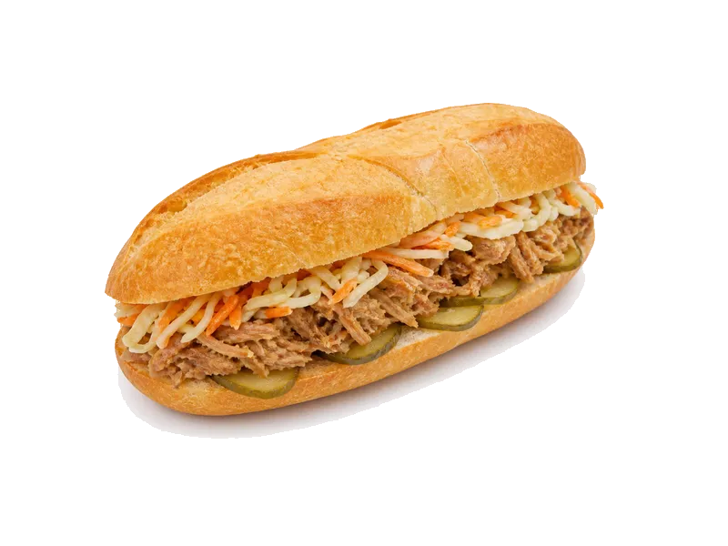

Polskie obiadki
Zapiekanka
Zapiekanka: 10.5 g białka, 230 kcal, 31 g węglowodanów i 7.5 g tłuszczu na 100 g. Kategoria: Polskie obiadki.
Kalorie230 kcalna 100 g
Białko / proteiny10.5 g
Węglowodany31 g
Tłuszcz7.5 g
Cena (szac.)~1,52 złza 100 g
Ceny zaktualizowano: maj 2026 (szacunek — ceny w popularnych supermarketach)
Porcja: sztuka (275g)
| Kalorie | 633 kcal |
|---|---|
| Białko | 28.9 g |
| Węglowodany | 85.3 g |
| Tłuszcz | 20.6 g |
| Cena (szac.) | ~4,19 zł |
Szczegółowe składniki odżywcze na 100 g
| Wartość energetyczna (kalorie) | 230 kcal |
|---|---|
| Białko (proteiny) | 10.5 g |
| Węglowodany | 31 g |
| Tłuszcz | 7.5 g |
| Tłuszcze nasycone | 3.75 g |
| Tłuszcze nienasycone | 3.75 g |
| Witaminy i minerały | Żelazo, Tiamina (B1), Potas |
| Współczynnik kcal / 1 g białka | 21.9 |
| Cena produktu (szac. za 100 g) | ~1,52 zł |
| Cena za 100 g białka (szac.) | ~14,51 zł |